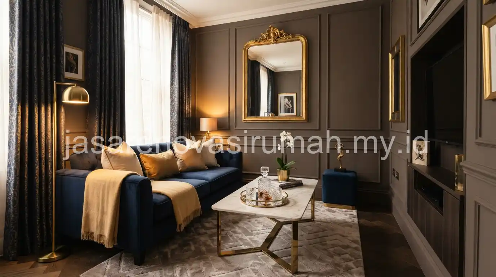
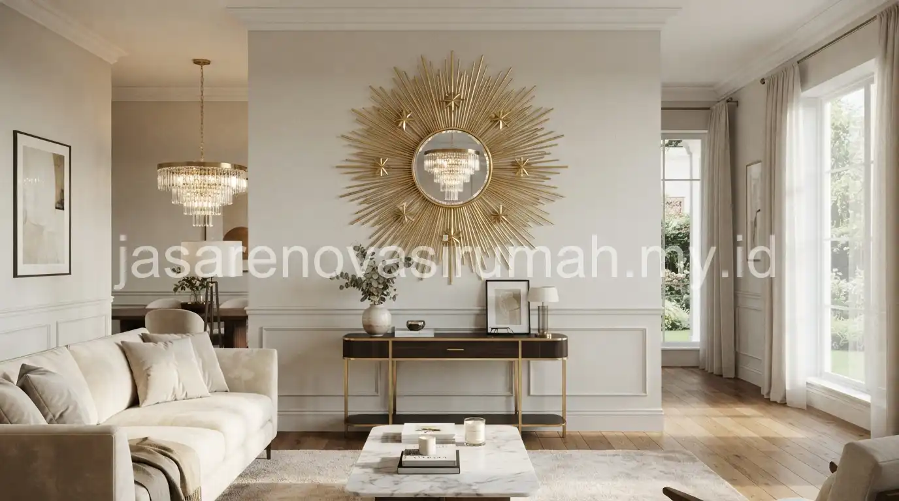

Desain interior ruang tamu kecil bisa tetap terlihat mewah dengan memilih furnitur berukuran proporsional, palet warna terang, cermin dekoratif untuk efek pantulan cahaya, serta pencahayaan berlapis yang menghindari kesan gelap dan sumpek.
Kesan mewah pada ruang tamu kecil tidak selalu bergantung pada ukuran furnitur besar, melainkan pada pemilihan detail material dan tata letak yang tepat.
Bagaimana Cara Membuat Ruang Tamu Kecil Terlihat Lebih Luas dan Tidak Sumpek?
Cara paling efektif adalah mengurangi jumlah furnitur hingga yang benar-benar diperlukan, serta memanfaatkan elemen reflektif seperti cermin untuk menciptakan ilusi ruang lebih luas.
Beberapa trik yang bisa langsung diterapkan:
- Gunakan cermin besar di salah satu dinding untuk memantulkan cahaya dan memberi kesan ruangan lebih dalam.
- Pilih furnitur dengan kaki ramping agar lantai tetap terlihat, bukan tertutup penuh oleh badan furnitur.
- Hindari menempatkan terlalu banyak aksesori kecil di atas meja atau rak yang bisa membuat ruangan terasa penuh.
- Manfaatkan sudut ruangan untuk rak sudut atau tanaman hias vertikal, bukan furnitur besar.
Furnitur Seperti Apa yang Cocok untuk Ruang Tamu Berukuran Terbatas?
Furnitur multifungsi dan berukuran proporsional adalah pilihan terbaik untuk ruang tamu kecil, karena tetap fungsional tanpa memakan banyak ruang gerak.
Beberapa jenis furnitur yang direkomendasikan:
- Sofa 2-seater atau sofa modular yang bisa disusun ulang sesuai kebutuhan.
- Meja kopi dengan laci penyimpanan agar barang-barang kecil tidak berserakan di permukaan meja.
- Rak dinding gantung dibanding lemari besar berdiri, untuk menghemat ruang lantai.
- Ottoman atau bangku kecil yang bisa berfungsi ganda sebagai tempat duduk tambahan maupun meja kecil.
Prinsip pemilihan furnitur proporsional ini juga sejalan dengan pendekatan pada desain interior kamar tidur minimalis yang sama-sama mengutamakan efisiensi ruang tanpa mengorbankan kenyamanan.
Warna dan Pencahayaan Apa yang Membuat Ruang Tamu Kecil Terkesan Mewah?
Warna netral terang seperti putih gading, krem, dan abu muda dipadukan dengan aksen warna gelap pada satu titik fokus adalah kombinasi yang sering menghasilkan kesan mewah pada ruang tamu kecil.
| Elemen | Rekomendasi | Efek yang Dihasilkan |
|---|---|---|
| Warna dinding | Putih gading, krem muda | Membuat ruangan terasa lebih terang dan luas |
| Aksen warna | Hijau tua, navy, atau emas pada satu furnitur | Memberi kesan mewah tanpa membuat ruangan ramai |
| Pencahayaan utama | Lampu downlight warm white | Menciptakan suasana hangat dan elegan |
| Pencahayaan tambahan | Lampu lantai atau lampu dinding | Menambah dimensi cahaya tanpa memenuhi langit-langit |
Pencahayaan berlapis, yaitu kombinasi lampu utama dan lampu aksen, membantu ruang tamu kecil terlihat lebih hidup dibanding hanya mengandalkan satu sumber cahaya dari tengah ruangan.
7 Tips Ringkas Menata Ruang Tamu Kecil agar Mewah
Berikut rangkuman langkah yang bisa langsung diterapkan pada ruang tamu Anda:
- Batasi jumlah furnitur hanya pada yang benar-benar dibutuhkan.
- Gunakan cermin besar untuk efek pantulan cahaya dan ruang.
- Pilih palet warna netral terang sebagai warna dasar dinding.
- Tambahkan satu aksen warna gelap atau emas pada furnitur utama.
- Gunakan pencahayaan berlapis, bukan hanya satu titik lampu utama.
- Manfaatkan rak dinding dibanding lemari besar berdiri.
- Jaga kerapian dengan meminimalkan aksesori kecil yang tidak perlu.
Untuk hasil yang lebih presisi sesuai ukuran dan bentuk ruang tamu Anda, konsultasikan konsep ini dengan jasa desain interior yang dapat membantu menata ulang tata letak secara langsung di lokasi.
Kesalahan Umum Saat Mendesain Ruang Tamu Kecil
Kesalahan yang paling sering terjadi adalah memaksakan sofa besar berukuran 3-seater pada ruangan yang sebenarnya tidak cukup luas, sehingga ruang gerak menjadi sangat terbatas.
Kesalahan lain yang perlu dihindari:
- Menggunakan terlalu banyak motif atau pola pada karpet, gorden, dan bantal sekaligus.
- Menempatkan televisi berukuran besar yang tidak proporsional dengan luas ruangan.
- Mengabaikan pencahayaan alami dengan menutup jendela menggunakan gorden tebal sepanjang hari.

Pada akhirnya, ruang tamu kecil tetap bisa terlihat mewah asalkan penataan furnitur, warna, dan pencahayaan dilakukan secara proporsional dan konsisten.
Lihat juga portofolio interior kami sebagai referensi tambahan sebelum menentukan konsep akhir ruang tamu Anda.